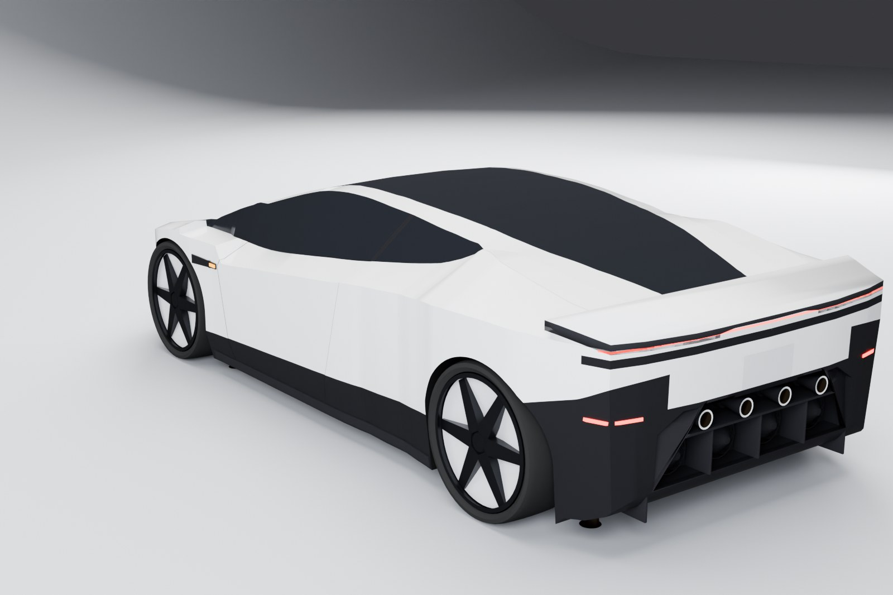
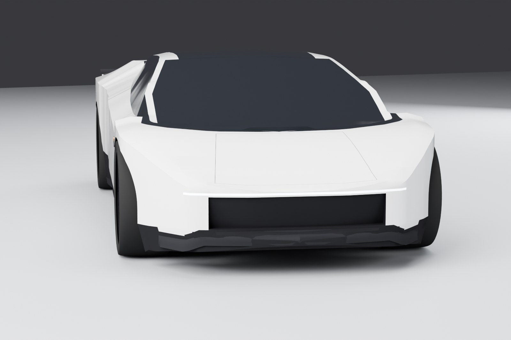
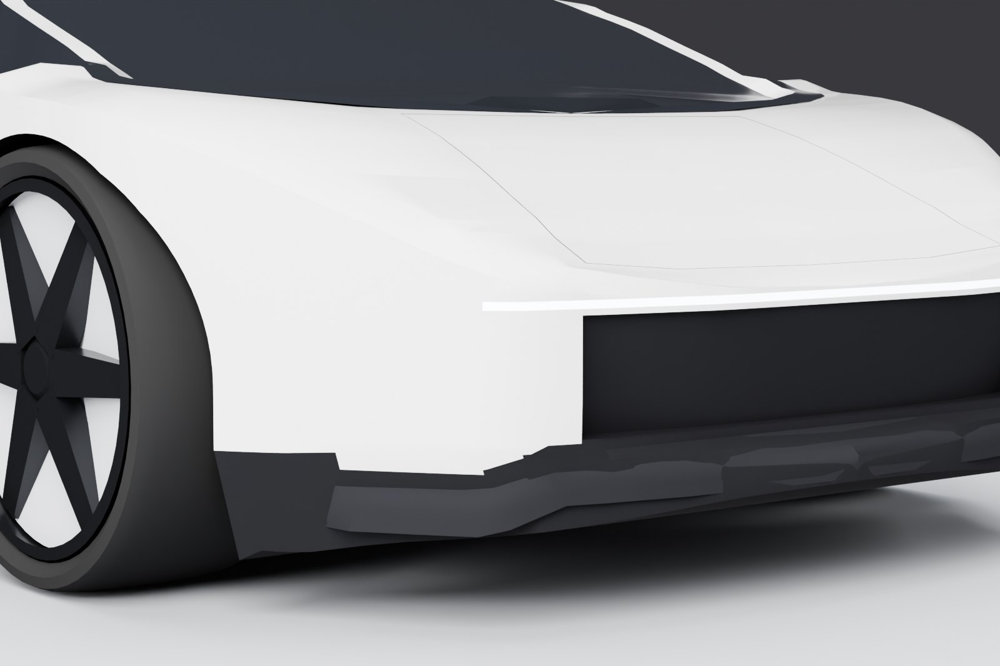
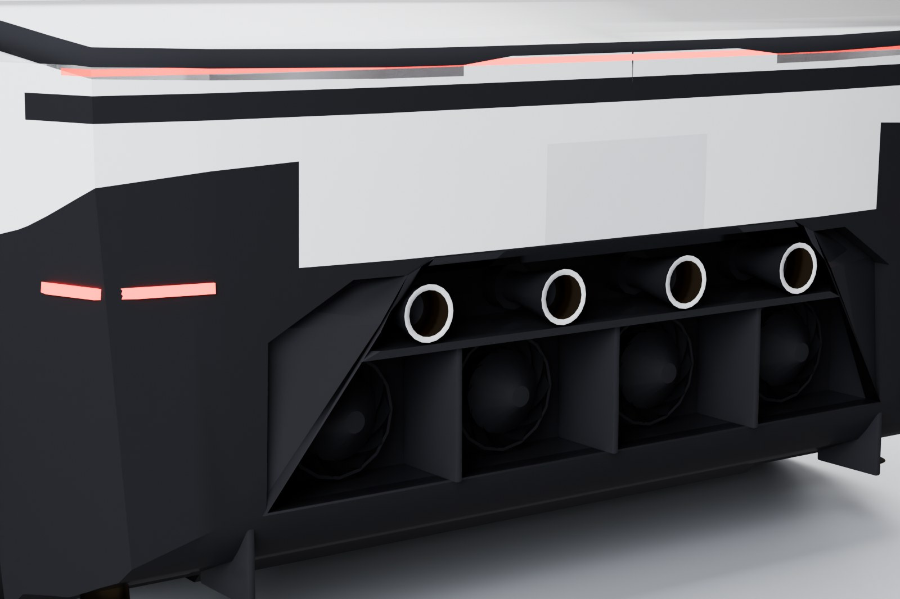
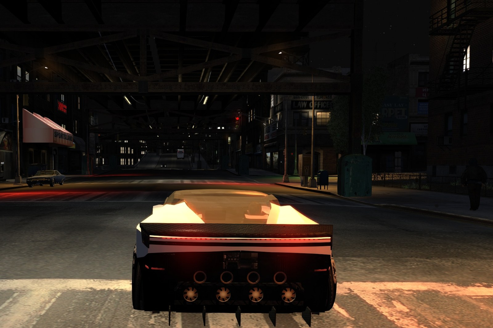

Roadster X
A from-scratch drivable hypercar add-on for Grand Theft Auto IV: The Complete Edition (PC).
Roadster X is a fictional two-seat electric hypercar for GTA IV that can jump, hover and fly on ten cold-gas thrusters. Hop over traffic, hold a jump to keep rising, hover above the city, spin it round, throw it into tricks, and let the thrusters catch you before you hit the ground. Or just drive it: it has an active rear wing, fan downforce and butterfly doors. It's an add-on car, so no stock car is replaced.

Download
Then follow the install guide.
 |  |
 |  |
Renders of the mod's own model (version 1.0.1).

In the game, at night under the elevated railway (the 1.0.0 body).
Features
- Add-on car
roadsterx: spawn it with your trainer. Nothing in the game is replaced. - Jump: tap to hop over traffic. Hold to jump higher: the car keeps rising while you hold, so you choose the height. Let go and it drops onto a soft landing.
- Hover and fly: double-tap to rise and hover. Climb with the jump button or the accelerator, or look up to climb straight up. Descend and travel with the stick, and boost. Double-tap again to drop: the thrusters catch the car just above the ground. In the air, one press of the jump button fires the jets again.
- Air tricks: hold the trick button in the air to turn the car freely: flips, rolls, spins. Push forward to keep moving while you do it. Kickflips on the road, and quick 180 and 360 spins.
- Soft landings: jumps, ramp jumps and ledge drops are cushioned near the ground automatically.
- Turn on the spot: from a standstill the car pivots smoothly; push further to turn faster. Powered drifts when moving.
- Ten thrusters with white vapor jets, trails and a glow at night.
- Active rear wing: Auto, Downforce, Airbrake and Stowed modes.
- Speed-scaled downforce with fan suction for grip.
- Water rescue: drive into water and the thrusters lift you back out (can be turned off).
- On-screen systems panel with gauges and the controls that matter right now.
- 49 original synthesized sounds: thrusters, wing servo, doors, motor.
- One settings file (
plugins\RoadsterX.ini) with a comment on every line. It reloads while you play.
Requirements
- Grand Theft Auto IV: The Complete Edition for PC, version 1.2.0.59 (Steam or Rockstar Games Launcher). Windows, or a Mac with CrossOver.
- FusionFix 5.1.1 or newer (tested with 5.1.1 and 5.1.2). It loads the plugin and the car's files from the
updatefolder. - Aru's C++ ScriptHook 0.5.1 with the Complete Edition hook fix (
ScriptHook.dll+aCompleteEditionHook.asi). The car's systems run as a ScriptHook script. - Optional: a trainer that spawns add-on cars by model name, for example Liberty's Legacy 2.4.1.
None of these are included in the download.
Controls
See docs/CONTROLS.md for keyboard and controller. The game also shows them when you get in.
Known issues
- One passenger: Roadster X is a two-seater, so only one companion can ride.
- Butterfly doors: companions sometimes take a moment to get in through the butterfly doors.
- Text files: the car's text uses the
update\common\text\*8.gxtfiles. If another mod uses the same file names, one of the two loses its text. Tell us and we'll move ours. - Weight: the car is very heavy on purpose, so it shoves other cars around in a crash.
- Testing: tested on an Apple Silicon Mac with CrossOver and GTA IV CE 1.2.0.59. Windows reports are welcome.